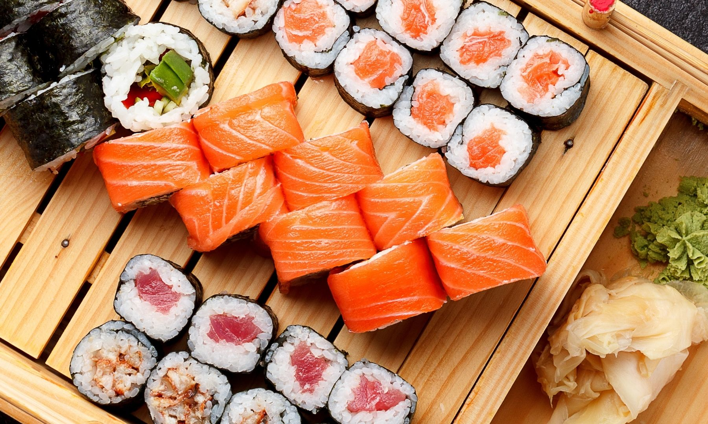
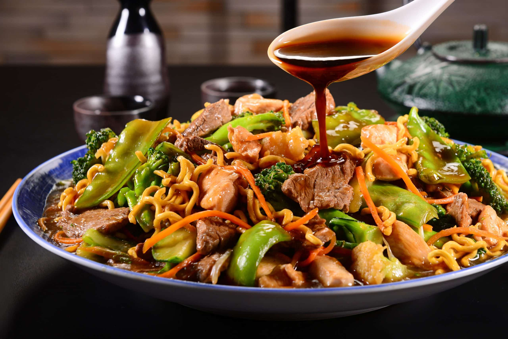
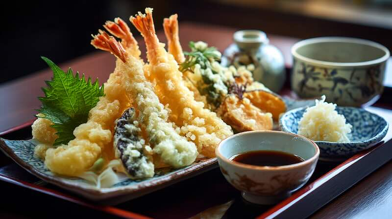

Sushi
Combinação de arroz temperado com peixes e ingredientes frescos.
Conheça alguns pratos tradicionais que estarão disponíveis durante o evento.

Combinação de arroz temperado com peixes e ingredientes frescos.

Caldo aromático servido com macarrão, carne suína, ovo e vegetais.

Macarrão salteado com legumes frescos e molho especial.

Legumes e camarões empanados em massa leve e crocante.

Bolinho de arroz recheado e envolto por alga nori.

Doce japonês preparado com massa de arroz e recheios variados.